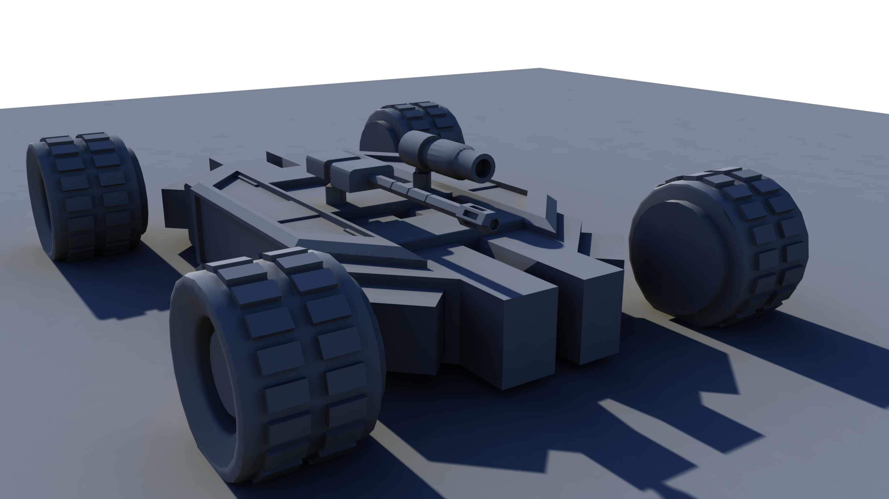

Faction Fall
Student Project
- Technology: Unity
- Platform: Windows
This is another one of my student projects.
Faction fall is a 3rd person vehicle shooter with responsive vehicle controls and basic A.I. behavior such as Patrolling, detection and attacking
The game is playable on keyboard and a gamepad of choice with twin-stick controls. The left stick controlling direction and the right controlling the direction of the turret mounted on the vehicle.

Game Asset Screenshots
Free Roaming the Environment